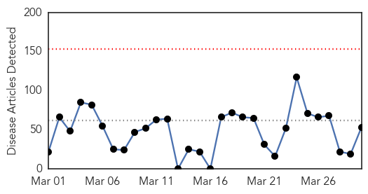
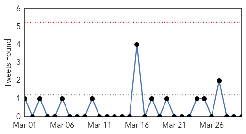

Toggle navigation
Early Warning
Daily Alerts
Unknown
Mar 30, 2015
Compare to:
-
Dengue Fever
Hemmorhagic Fever
Mold/Fungal Infection
Influenza
Meningitis
Pertussis / Whooping Cough
Middle East Respiratory Syndrome
Cholera
Hepatitis
Chikungunya
Yellow Fever
Bubonic Plague
West Nile Virus
Swine Flu
Ebola
Measles
Mumps
30 Day Trends
Web: 0
alerts
, 0
warnings
Twitter: 0
alerts
, 0
warnings
Top Articles:
Showing top 50 articles...
0.983
Vaccine sought for deadly infection
0.974
Vaccine sought for deadly infection
0.968
Public, private sectors join forces to fight TB in urban slums of Uganda - Uganda
0.917
Chicago Tribune
0.917
Chicago Tribune
0.917
Chicago Tribune
0.917
Chicago Tribune
0.917
Chicago Tribune
0.917
Chicago Tribune
0.917
Chicago Tribune
0.917
Chicago Tribune
0.917
Chicago Tribune
0.917
Chicago Tribune
0.917
Chicago Tribune
0.917
Chicago Tribune
0.917
Chicago Tribune
0.917
Chicago Tribune
0.917
Chicago Tribune
0.917
Chicago Tribune
0.917
Chicago Tribune
0.917
Chicago Tribune
0.917
Chicago Tribune
0.917
Chicago Tribune
0.917
Chicago Tribune
0.917
Chicago Tribune
0.917
Chicago Tribune
0.917
Chicago Tribune
0.862
Kampala is seizing TB by the horns
0.851
Ebola patient getting better
0.850
Superbug infections to be halved under new CDC plan for US hospitals
0.801
HIV outbreak in Indiana hits ‘epidemic proportions’
0.780
Health officials won't disclose number of positive tuberculosis tests at Homewood High
0.777
Tuberculosis showing a resurgence in China
0.702
Deadly air strike kills dozens near Yemeni refugee camp
0.702
Solar plane en route to China for fifth leg of round-the-world flight
0.702
'La Sapienza': Baroque Italy's mystical refuge from soulless world
0.702
Iran nuclear talks hit hurdle ahead of deadline
0.702
Greece submits list of reforms to creditors
0.702
Germanwings co-pilot had 'suicidal tendencies' in the past
0.702
French lawmakers debate crackdown on prostitution
0.702
Far-right gains spell end to France's two-party system
0.659
New Strain of Enterovirus May Have Caused Mystery Paralysis -
0.624
The Oncoming Medical Disaster…With No Cure In Sight
0.599
Acute crisis of drinking water prevails in Kishoreganj
0.594
When a parent won’t abide by the understanding behind a non-medical exemption to school vaccine mandates – Respectful Insolence
0.579
Power walk: March to Topeka one way to make a stand for schools.
0.576
Feral hog hunters cautioned about Swine Brucellosis
0.576
Penn surgeons develop new tools to identify joint replacement patients at risk for serious complications
0.555
WHO appeals for US$ 124 million to continue its support to Syria
0.551
600,000 new cases of TB in Nigeria, by agency
Top Tweets:
No tweets found for Mar 30, 2015
Web/News Articles

Tweets

Article Locations
Article Confidences